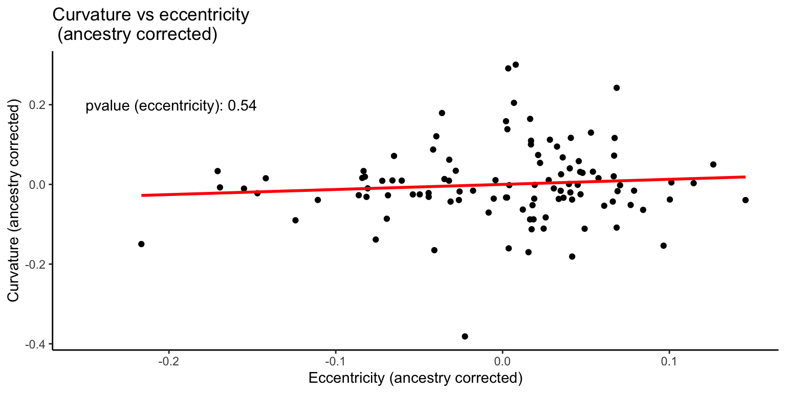

Biological Significance
Tina Lasisi
2021-05-05 18:56:03
Last updated: 2021-05-05
Checks: 6 1
Knit directory: 2020_HairPheno_manuscript/analysis/
This reproducible R Markdown analysis was created with workflowr (version 1.6.2). The Checks tab describes the reproducibility checks that were applied when the results were created. The Past versions tab lists the development history.
The R Markdown file has unstaged changes. To know which version of the R Markdown file created these results, you’ll want to first commit it to the Git repo. If you’re still working on the analysis, you can ignore this warning. When you’re finished, you can run wflow_publish to commit the R Markdown file and build the HTML.
Great job! The global environment was empty. Objects defined in the global environment can affect the analysis in your R Markdown file in unknown ways. For reproduciblity it’s best to always run the code in an empty environment.
The command set.seed(12345) was run prior to running the code in the R Markdown file. Setting a seed ensures that any results that rely on randomness, e.g. subsampling or permutations, are reproducible.
Great job! Recording the operating system, R version, and package versions is critical for reproducibility.
Nice! There were no cached chunks for this analysis, so you can be confident that you successfully produced the results during this run.
Great job! Using relative paths to the files within your workflowr project makes it easier to run your code on other machines.
Great! You are using Git for version control. Tracking code development and connecting the code version to the results is critical for reproducibility.
The results in this page were generated with repository version 5c2f006. See the Past versions tab to see a history of the changes made to the R Markdown and HTML files.
Note that you need to be careful to ensure that all relevant files for the analysis have been committed to Git prior to generating the results (you can use wflow_publish or wflow_git_commit). workflowr only checks the R Markdown file, but you know if there are other scripts or data files that it depends on. Below is the status of the Git repository when the results were generated:
Ignored files:
Ignored: .Rhistory
Ignored: .Rproj.user/
Ignored: output/.DS_Store
Ignored: output/knitr_docs/
Unstaged changes:
Modified: .DS_Store
Modified: analysis/significance.Rmd
Modified: output/plt_QualQuant_CurvMedian.png
Modified: output/plt_strat.png
Note that any generated files, e.g. HTML, png, CSS, etc., are not included in this status report because it is ok for generated content to have uncommitted changes.
These are the previous versions of the repository in which changes were made to the R Markdown (analysis/significance.Rmd) and HTML (docs/significance.html) files. If you’ve configured a remote Git repository (see ?wflow_git_remote), click on the hyperlinks in the table below to view the files as they were in that past version.
| File | Version | Author | Date | Message |
|---|---|---|---|---|
| html | 5c2f006 | Arslan-Zaidi | 2021-05-05 | knitted |
| Rmd | d3ed30b | Arslan-Zaidi | 2021-05-05 | finalized significance section |
| Rmd | 1750869 | Arslan-Zaidi | 2021-05-05 | revisions trait-trait correlation |
| html | 1750869 | Arslan-Zaidi | 2021-05-05 | revisions trait-trait correlation |
| html | a0b6c5e | tinalasisi | 2020-12-20 | Build site. |
| Rmd | b7cddab | tinalasisi | 2020-12-20 | wflow_publish(“analysis/significance.Rmd”, update = TRUE) |
| html | 650ebff | tinalasisi | 2020-12-20 | Build site. |
| Rmd | 5f6c138 | tinalasisi | 2020-12-20 | wflow_publish("analysis/*", update = TRUE) |
| html | 68f0ec2 | tinalasisi | 2020-11-24 | Build site. |
| Rmd | 7ddd3f7 | tinalasisi | 2020-11-24 | Initial commit |
| html | 7ddd3f7 | tinalasisi | 2020-11-24 | Initial commit |
To explore the significance of quantifying hair fiber morphology, we explore the relationship between various quantitative hair traits, categorical data and genotype data on the same sample.
Our data consists of 193 individuals for whom we have quantitative hair phenotype data. In our first data quality control step, we filter to keep individuals who have more than 4 hair fragments in their curvature image and over 10% African ancestry. We calculate mean and median values for the cross-sectional data we have collected for individuals (~ 6 sectioned hair fibers). In our analyses, we use median values as they are less affected by intra-individual outliers.
1 Self-reported hair texture vs. quantitative hair curvature
We compare the self-reported hair texture with mean and median curvature for our sample.
Self-reported hair texture vs. quantitative hair curvature
The single individual with a high mean curvature in the straight group is the result of an artefact in the image.

Image of hair sample with artefact biasing the measurement
| Version | Author | Date |
|---|---|---|
| 7ddd3f7 | tinalasisi | 2020-11-24 |
The red arrow points to a stray fiber that likely contaminated the sample and was missed during imaging. Such potential outliers are the reason we chose to use the median curvature for a sample in our analyses.
2 Objective hair texture classification vs. quantitative curvature
To explore how much data is lost when binning continuous variation, we compared mean and median curvature to classified hair texture. This classification is based on Loussouarn et al.’s 2007 paper "Worldwide diversity of hair curliness: a new method of assessment.
While the authors propose a number of parameters to distinguish curlier hair types (based on number of twists and waves among other factors), their primary classification is based on curvature. We demonstrate that, regardless of additional parameters, a considerable range of curvature is obscured when collapsing hair variation according to their curvature thresholds.
Objective hair classification vs. quantitative curvature
3 Ancestry vs. hair morphology
We carried out a number of analyses using the genotype data collected for this diverse sample. In an admixed sample where a continuous trait has divergent distributions in the parental ancestry groups, the resulting admixed population can show a correlation between ancestry and that trait. Finding such a correlation suggests may imply a polygenic trait with high heritability.
3.1 Admixture components
Our sample consists of admixed individuals with primarily African and European ancestry.
Admixture components for sample
The colors represent ancestries that correspond to the following 1000 Genomes populations: - SAS = South Asian - AMR = American - AFR = African - EUR = European - EAS = East Asian
Each of these are metapopulations based on the grouping of multiple (sub)continental population groups in the 1000 Genomes repository.
3.2 Ancestry vs. curvature
Here we plot the correlation between proportion of African ancestry and m-index, median curvature, and eccentricity.
Percentage of African ancestry vs. M-index, curvature and eccentricity
3.3 Curvature vs. eccentricity
The relationship between cross-sectional shape (eccentricity) and curvature has long been debated. Due to the coincidence of cross-sectional shape and curvature in various populations that are often contrasted (i.e. East Asian vs. North European vs. West African), it has been unclear whether these traits have a causal relationship (specifically that higher eccentricity predicts higher curvature). In our admixed sample, we have the opportunity to test this question and fit a model between these traits with and without ancestry.
3.3.1 Uncorrected
First we examine the data without correcting for ancestry.
Curvature vs. eccentricity (without correction for ancestry)
Fit a simple linear model and check the residuals.
Call:
lm(formula = curv_median ~ eccentricity_median, data = df_curv_ecc)
Residuals:
Min 1Q Median 3Q Max
-0.2843 -0.1245 -0.0264 0.1125 0.4770
Coefficients:
Estimate Std. Error t value Pr(>|t|)
(Intercept) -0.5682 0.1270 -4.474 1.94e-05 ***
eccentricity_median 1.0284 0.1692 6.076 1.96e-08 ***
---
Signif. codes: 0 '***' 0.001 '**' 0.01 '*' 0.05 '.' 0.1 ' ' 1
Residual standard error: 0.1576 on 106 degrees of freedom
Multiple R-squared: 0.2583, Adjusted R-squared: 0.2513
F-statistic: 36.92 on 1 and 106 DF, p-value: 1.959e-08
| Version | Author | Date |
|---|---|---|
| 1750869 | Arslan-Zaidi | 2021-05-05 |
The residual plots show that there might be a few problems with the relationship: 1. possibly an outlier distorting the relationship, 2. relationship might not be linear 3. errors might be heteroescedastic.
Let’s refit the model after removing the outlier.
Call:
lm(formula = curv_median ~ eccentricity_median, data = df_curv_ecc)
Residuals:
Min 1Q Median 3Q Max
-0.29590 -0.12290 -0.01791 0.09892 0.46713
Coefficients:
Estimate Std. Error t value Pr(>|t|)
(Intercept) -0.6707 0.1387 -4.836 4.56e-06 ***
eccentricity_median 1.1622 0.1842 6.311 6.73e-09 ***
---
Signif. codes: 0 '***' 0.001 '**' 0.01 '*' 0.05 '.' 0.1 ' ' 1
Residual standard error: 0.1561 on 105 degrees of freedom
Multiple R-squared: 0.275, Adjusted R-squared: 0.2681
F-statistic: 39.83 on 1 and 105 DF, p-value: 6.731e-09
| Version | Author | Date |
|---|---|---|
| 1750869 | Arslan-Zaidi | 2021-05-05 |
The outlier removal improves the fit. Next, check if the data fits a curvilinear (quadratic) model better.
The quadratic fit is better that the simple linear fit. Let’s compare the two models formally and see if the quadratic fit is better.
Analysis of Variance Table
Model 1: curv_median ~ eccentricity_median
Model 2: curv_median ~ eccentricity_median.c + eccentricity_median.c2
Res.Df RSS Df Sum of Sq Pr(>Chi)
1 105 2.5589
2 104 2.3655 1 0.19343 0.003543 **
---
Signif. codes: 0 '***' 0.001 '**' 0.01 '*' 0.05 '.' 0.1 ' ' 1This shows that the residual sum of squares is significantly smaller for the quadratic fit, i.e., the quadratic model fits the data better.
There still seems to be some heteroescedasticity in the errors. We will use the fitted values as weights in a weighted regression. Because the variance increases with the fitted values, we will use \(\frac{1}{fitted ~ values^2}\) as weights.
Call:
lm(formula = curv_median ~ eccentricity_median.c + eccentricity_median.c2,
data = df_curv_ecc, weights = inv.curv)
Weighted Residuals:
Min 1Q Median 3Q Max
-0.9321 -0.6342 -0.1648 0.3443 3.1744
Coefficients:
Estimate Std. Error t value Pr(>|t|)
(Intercept) 0.16298 0.01489 10.946 < 2e-16 ***
eccentricity_median.c 1.35687 0.24357 5.571 2e-07 ***
eccentricity_median.c2 5.06864 1.56175 3.245 0.00158 **
---
Signif. codes: 0 '***' 0.001 '**' 0.01 '*' 0.05 '.' 0.1 ' ' 1
Residual standard error: 0.8123 on 104 degrees of freedom
Multiple R-squared: 0.2557, Adjusted R-squared: 0.2414
F-statistic: 17.87 on 2 and 104 DF, p-value: 2.14e-07
The variance in the residuals is more homogeneous under this model. We will re-generate the scatterplot with this model fit.
Thus, there is a significant relationship between eccentricity and curvature. Does this hold when we add ancestry as a covariate in the model?
3.3.2 Corrected
We re-plot the relationship after residualizing curvature and eccentriciy (both) on ancestry.
Curvature vs. eccentricity (with correction for ancestry)
When we correct for ancestry, the association between eccentricity and curvature is no longer significant. This supports the idea that these traits co-occur due to ancestry stratification. Let’s test this formally.
The relationship looks rather linear so we will start with a simple linear model and inspect the residuals.
Call:
lm(formula = curv_median ~ eccentricity_median + AFR, data = df_curv_ecc)
Residuals:
Min 1Q Median 3Q Max
-0.37867 -0.04211 -0.00799 0.03639 0.29942
Coefficients:
Estimate Std. Error t value Pr(>|t|)
(Intercept) -0.08587 0.09768 -0.879 0.381
eccentricity_median 0.12775 0.14012 0.912 0.364
AFR 0.47886 0.03716 12.885 <2e-16 ***
---
Signif. codes: 0 '***' 0.001 '**' 0.01 '*' 0.05 '.' 0.1 ' ' 1
Residual standard error: 0.09735 on 104 degrees of freedom
Multiple R-squared: 0.7208, Adjusted R-squared: 0.7154
F-statistic: 134.2 on 2 and 104 DF, p-value: < 2.2e-16
The relationship looks pretty linear but there’s still some heteroescedasticity in the residuals. We will again fit a weighted regression model.
Call:
lm(formula = curv_median ~ eccentricity_median + AFR, data = df_curv_ecc,
weights = fitted.cve_afr)
Weighted Residuals:
Min 1Q Median 3Q Max
-0.90751 -0.40872 -0.06239 0.25190 2.43315
Coefficients:
Estimate Std. Error t value Pr(>|t|)
(Intercept) -0.02120 0.03712 -0.571 0.569
eccentricity_median 0.03448 0.05568 0.619 0.537
AFR 0.48972 0.05118 9.570 6.17e-16 ***
---
Signif. codes: 0 '***' 0.001 '**' 0.01 '*' 0.05 '.' 0.1 ' ' 1
Residual standard error: 0.5622 on 104 degrees of freedom
Multiple R-squared: 0.4921, Adjusted R-squared: 0.4824
F-statistic: 50.39 on 2 and 104 DF, p-value: 5.003e-16
The weighted regression accounts for the heteroescedasticity.

3.4 Curvature vs. skin pigmentation
To demonstrate the potential effect of population stratification on traits, we compare hair curvature with skin pigmentation (m-index). These two traits are not biologically related, yet, in an admixed population, we may see a correlation that is due to population stratification of these polygenic traits.
3.4.1 Uncorrected
First we examine the relationship between curvature and skin pigmentation without correcting for ancestry.
Call:
lm(formula = curv_median ~ m_index, data = df_curv_mindex)
Residuals:
Min 1Q Median 3Q Max
-0.20715 -0.06804 -0.03471 0.04818 0.51483
Coefficients:
Estimate Std. Error t value Pr(>|t|)
(Intercept) -0.280232 0.041533 -6.747 4.91e-10 ***
m_index 0.012887 0.001031 12.501 < 2e-16 ***
---
Signif. codes: 0 '***' 0.001 '**' 0.01 '*' 0.05 '.' 0.1 ' ' 1
Residual standard error: 0.1261 on 126 degrees of freedom
Multiple R-squared: 0.5536, Adjusted R-squared: 0.5501
F-statistic: 156.3 on 1 and 126 DF, p-value: < 2.2e-16
| Version | Author | Date |
|---|---|---|
| 1750869 | Arslan-Zaidi | 2021-05-05 |
Curvature vs. M-index (without correction for ancestry)
As expected, we see a significant correlation between the two traits. The relationship appears to be linear but there seems to be more variance for observations with higher melanin index/curvature. We will use a weighted regression approach again.
Call:
lm(formula = curv_median ~ m_index, data = df_curv_mindex, weights = weights_cvm)
Weighted Residuals:
Min 1Q Median 3Q Max
-0.8842 -0.3855 -0.2268 0.1617 4.4355
Coefficients:
Estimate Std. Error t value Pr(>|t|)
(Intercept) -0.312749 0.047890 -6.531 1.46e-09 ***
m_index 0.013704 0.001582 8.660 1.92e-14 ***
---
Signif. codes: 0 '***' 0.001 '**' 0.01 '*' 0.05 '.' 0.1 ' ' 1
Residual standard error: 0.7457 on 126 degrees of freedom
Multiple R-squared: 0.3731, Adjusted R-squared: 0.3681
F-statistic: 74.99 on 1 and 126 DF, p-value: 1.917e-14
That fixes the heteroescedasticity issue.
| Version | Author | Date |
|---|---|---|
| 5c2f006 | Arslan-Zaidi | 2021-05-05 |
3.4.2 Corrected
We then apply a correction for ancestry and re-analyze the data.
Like with curvature and eccentricity, the relationship between curvature and skin pigmentation is no longer significant when ancestry is taken into account.
R version 4.0.4 (2021-02-15)
Platform: x86_64-apple-darwin17.0 (64-bit)
Running under: macOS Mojave 10.14.6
Matrix products: default
BLAS: /Library/Frameworks/R.framework/Versions/4.0/Resources/lib/libRblas.dylib
LAPACK: /Library/Frameworks/R.framework/Versions/4.0/Resources/lib/libRlapack.dylib
locale:
[1] en_US.UTF-8/en_US.UTF-8/en_US.UTF-8/C/en_US.UTF-8/en_US.UTF-8
attached base packages:
[1] stats graphics grDevices utils datasets methods base
other attached packages:
[1] cowplot_1.1.1 knitr_1.31 forcats_0.5.1 stringr_1.4.0
[5] dplyr_1.0.5 purrr_0.3.4 readr_1.4.0 tidyr_1.1.3
[9] tibble_3.1.0 ggplot2_3.3.3 tidyverse_1.3.0
loaded via a namespace (and not attached):
[1] Rcpp_1.0.6 lattice_0.20-41 lubridate_1.7.10 assertthat_0.2.1
[5] rprojroot_2.0.2 digest_0.6.27 utf8_1.2.1 plyr_1.8.6
[9] R6_2.5.0 cellranger_1.1.0 backports_1.2.1 reprex_1.0.0
[13] evaluate_0.14 highr_0.8 httr_1.4.2 pillar_1.5.1
[17] rlang_0.4.10 readxl_1.3.1 rstudioapi_0.13 whisker_0.4
[21] jquerylib_0.1.3 Matrix_1.3-2 rmarkdown_2.7 splines_4.0.4
[25] labeling_0.4.2 munsell_0.5.0 broom_0.7.5 compiler_4.0.4
[29] httpuv_1.5.5 modelr_0.1.8 xfun_0.22 pkgconfig_2.0.3
[33] mgcv_1.8-34 htmltools_0.5.1.1 tidyselect_1.1.0 workflowr_1.6.2
[37] fansi_0.4.2 crayon_1.4.1 dbplyr_2.1.0 withr_2.4.1
[41] later_1.1.0.1 grid_4.0.4 nlme_3.1-152 jsonlite_1.7.2
[45] gtable_0.3.0 lifecycle_1.0.0 DBI_1.1.1 git2r_0.28.0
[49] magrittr_2.0.1 scales_1.1.1 cli_2.3.1 stringi_1.5.3
[53] reshape2_1.4.4 farver_2.1.0 fs_1.5.0 promises_1.2.0.1
[57] xml2_1.3.2 bslib_0.2.4 ellipsis_0.3.1 generics_0.1.0
[61] vctrs_0.3.6 tools_4.0.4 glue_1.4.2 hms_1.0.0
[65] yaml_2.2.1 colorspace_2.0-0 rvest_1.0.0 haven_2.3.1
[69] sass_0.3.1